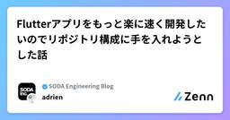
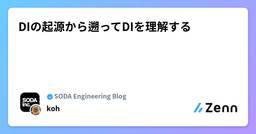
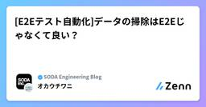

SODA Engineering Blogのフィード
https://zenn.dev/p/team_soda
株式会社SODAの開発組織がお届けするZenn Publicationです。 是非Entrance Bookもご覧ください！ → https://recruit.soda-inc.jp/engineer
フィード

Flutterアプリをもっと楽に速く開発したいのでリポジトリ構成に手を入れようとした話
SODA Engineering Blogのフィード
＼スニダンを開発しているSODA inc.の Advent Calendar 2024 20日目の記事です!!!／ はじめにSODAではここ1,2年の間に新機能開発に携わるFlutterエンジニアが4人から9人へ拡大し、日々機能開発や運用作業に力を注いでいます。私たちは主にSNKRDUNKというアプリを運用しており、実はJP版とGlobal版が存在しています。これら2つのアプリケーションを運用する中で直面する問題にどのように対処していくか紹介します。 問題の背景SNKRDUNKは現在２つのリポジトリで機能開発を進めています。JP版の開発チームの方が規模も大きく開発が先...
1日前

DIの起源から遡ってDIを理解する
SODA Engineering Blogのフィード
＼スニダンを開発しているSODA inc.の Advent Calendar 2024 19日目の記事です!!!／ はじめにDIと聞いてなんとなくで理解している方はいませんか？言うまでもないかもしれませんがDIとはDependency Injectionのことであり、日本語では一般的に依存性注入と訳されることが一般的です。弊社ではちょうどモジュラーモノリスを想定したバックエンドのモジュール分割を行っています。モジュール分割において、DIどうするといったトピックがあったので調べてみました。この記事ではDIについて起源から遡り、ふわっとした理解の解像度を高めることを目的とします...
2日前
僕のFlutterパッケージがGitHubで100⭐️になって嬉しかった話 2
2
SODA Engineering Blogのフィード
!スニダンを開発している SODA inc.の Advent Calendar 2024 17 日目の記事です 📝 SODA inc.でsnkrdunkを開発している@natsukazeです！この記事では、自分が公開したFlutterのプラグインパッケージ[1]Galがリリースから1年半ほど経過し、有難いことにpub.devで320likes、1ヶ月で7万DL、GitHubで100starsと順調に成長してきたので、思い出を交えつつ振り返っていきます！OSSやプラグインならではの話をしていきますので、是非最後までお付き合い下さい！いいねが多いと、アドベントカレンダーの景品が...
4日前

[E2Eテスト自動化]データの掃除はE2Eじゃなくて良い？
SODA Engineering Blogのフィード
こんにちは。SODAでクオリティエンジニアをやっているokauchiです。最近のテスト自動化での気づきをメモがてら紹介します！ テストシナリオの掃除はE2Eテストでやる必要がある？E2Eテストシナリオで生み出して二度と使わないデータを量産していませんか？一時的に作成をしただけでその後は二度と参照がされないようなデータです。スニダンの自動化で言うと出品や取引、アカウントなどが該当しますね。二度と使われないのであれば残しておく必要もないし、逆にあることで不便になることが多いです。情報の検索性が下がったりするので。これをついついE2Eで対処してしまおうとしてしまった時の話です！ E2...
5日前
AI使わずにgomockでGoテスト生成 1
SODA Engineering Blogのフィード
この記事を質問から始めましょう：ユニットテストのテストケースを作成するのが好きですか？問題ないと感じる人もいるかもしれませんが、大量のモックを必要とする場合、テストケースの作成を好まない人もいるでしょう。エンジニアなので、このプロセスをコンピューターに自動化させてみてはいかがでしょうか？この記事では、AIを使用せずに、常に決定論的な結果を得られる方法でユニットテストケースを生成するアプローチを探ります。 テスト生成とはテストジェネレーターは、SEがテストケースを手動で作成する手間を大幅に軽減する便利な手段を提供します。これらのツールには、簡単な実装のものから非常に高度なソリューシ...
5日前
MagicPodのステップのコピペを時短する
SODA Engineering Blogのフィード
＼スニダンを開発しているSODA inc.の Advent Calendar 2024 15日目の記事です!!!／こんにちは。SODAでクオリティエンジニアをやっているokauchiです。今回はMagicPodでステップのコピペをより効率的に出来ないかを考えてみた記事になります！ あの処理をコピペしたいけど、あの処理はどこにあったっけ？ノーコード自動化ツールを使った日々のテストシナリオ作成の中で、過去に作った一部のステップをコピーして利用したり、コピーしたステップをベースにテストシナリオを作成することはありませんか？どんなに簡単な処理でも1からまた作るとtypoなどで不具合を埋め...
6日前
部分的にGoのテスト速度向上 1
SODA Engineering Blogのフィード
Goにはとても堅牢なファーストパーティのテストシステムがあり、他の言語に比べてテストが高速に実行できるのが特徴です。でも、大規模なコードベースになると、テストが遅くなったり非効率になったりすることがあります。特にCI環境では、テストが遅いとコストがどんどん増えてしまうことも。この記事では、Goの重要なコードを効率よく、選択的にテストする方法について見ていきます。 部分的にテストとは選択的テストとは、「重要な」コードだけをテストする方法です。「重要なテスト」とは、以下の条件のいずれかを満たすテストとして定義できます：テスト対象のコードが変更された。テスト対象のコードが変更された...
8日前

【Flutter】Riverpod開発チートシート2024保存版
SODA Engineering Blogのフィード
＼スニダンを開発している SODA inc.の Advent Calendar 2024 13日目の記事です!!!／ ごあいさつこんにちは、Flutterアプリエンジニアの一木です。FlutterのRiverpodで開発したときに使えそうなコードなどをメインでまとめました。個人開発や業務でも使えるかもしれないコード早見表として参考になればと思います。Flutterの実行環境は整っているものとして、自分が個人でも使っている開発を便利にしてくれるプラグインなども紹介していきます！ 00実行環境編IDEはVSCodeFlutterのバージョン管理ツールはasdfriver...
9日前
Google CloudのiPaaS「Application Integration」でファイル転送を自動化する
SODA Engineering Blogのフィード
＼スニダンを開発しているSODA inc.の Advent Calendar 2024 12日目の記事です!!!／📣 みなさん! GCPはGCPではなくなり、Google Cloudとなりました（2022年6月）いまだにGCPという表記を見かけるので気をつけましょうお客様のエクスペリエンスをシンプルにし、プロダクト間の一貫性を保つために、Google Cloud Platform は Google Cloud という名称になりました。引用元： Google Cloud の新しくなったホームページのご紹介 はじめに株式会社SODA CPOのkjです (自己紹介は文末に)...
9日前
負けカンスウが多すぎる！
SODA Engineering Blogのフィード
＼スニダンを開発しているSODA inc.の Advent Calendar 2024 11日目の記事です!!!／この世には神クラスという言葉が存在します。一つのクラスに余りにも多くの機能を持たせてしまい、肥大化して手の施しようがなくなったクラスに付けられた蔑称のことです。時に肥大化するものはクラスだけではありません。オブジェクト指向の言語ではクラスが肥大化しがちですが、Goのようなオブジェクト指向ではない言語では関数が肥大化しがちです。そんな思春期の自尊心の如く肥大化した関数たちのことを、欠陥が多すぎて開発者から敬遠されてしまう関数たちのことを、ここでは親しみを込めて負け関...
10日前
Goのビルドキャッシュを使ってCIを7分短縮した話
SODA Engineering Blogのフィード
SODA inc. Advent Calendar 2024, Go Advent Calendar 2024に寄稿させていただきました。 はじめにCIで動く統合テストが異様に遅いので調査したところ、テスト本体ではなくソースコードのビルドに時間が掛かっていることがわかった。そこでビルド時に生成されるキャッシュをGitHub Actionsに保存させることで時間を短縮させた。この記事ではGitHub Actionsでビルドキャッシュを使い回す方法と、テスト時のビルドに掛かる時間を調べる方法を説明する。 GoのビルドキャッシュをGitHub Actionsに保存する方法 概要...
11日前
より良いユーザー体験を求めて "Haptics(触覚フィードバック)" を深掘りする
SODA Engineering Blogのフィード
!＼スニダンを開発しているSODA inc.の Advent Calendar 2024 9日目の記事です!!!／みんな素敵な記事を書いているので是非購読してください！ボタンをタップした時、スワイプした時、アプリのコアな体験をした時・・・Haptic Feedbackがうまく設計されているアプリは、触っていて心地よい感覚になります。この記事では、今のプロダクトを少しでも良くするために、押した時だけではない、Haptic Feedbackの使い所Haptic Feedbackの"鮮明さ"を微調整しようMacOSでもHaptic Feedbackを使おうこれは良い！と感...
12日前
An adventure in Vue 3’s custom render function
SODA Engineering Blogのフィード
＼スニダンを開発しているSODA inc.の Advent Calendar 2024 8日目の記事です!!!／Hi! I’m Albert, full stack engineer from SODA’s Global team. Our team works on the global version of SNKRDUNK here:https://snkrdunk.com/enLet me take you to an adventure I stumbled upon when working with Vue 3 custom render function. ...
14日前
From Bash to Go: A Journey in Self-Documenting Development Environment
SODA Engineering Blogのフィード
＼スニダンを開発しているSODA inc.の Advent Calendar 2024 7日目の記事です!!!／Ever stared at a years-old bash script and wondered what ancient developer secrets it holds? We've all been there. This is the story of how we transformed our development environment setup from a collection of mysterious bash incantations...
14日前
Result型使ってますか？
SODA Engineering Blogのフィード
＼スニダンを開発しているSODA inc.の Advent Calendar 2024 6日目の記事です!!!／こんにちは、昨日と同じく私Mapleの記事です。「Result型使ってますか？」解説していきます！TypeScriptでのエラーハンドリングは、従来のtry-catch構文を用いる方法が一般的です。しかし、関数の戻り値としてエラーを扱うResult型を使用することで、より安全で明確なコードを書くことができます。本記事では、Result型のメリットや、try-catchと比較した際の優位性について詳しく解説します。 1. Result型とはResult型は、操作...
16日前
Vueからの移行に最適な選択肢 [React][Svelte]
SODA Engineering Blogのフィード
＼スニダンを開発しているSODA inc.の Advent Calendar 2024 5日目の記事です!!!／こんにちは、Mapleといいます。「Vueからの移行に最適な選択肢」解説していきます！Vue.jsから他のフレームワークへの移行を検討している開発者やチームにとって、その選択はプロダクトの今後を左右します。。。一般的にはReactとそのフレームワークであるNext.jsが候補に挙がりますが、これらはエコシステムの複雑さや学習コストが高くなる可能性があります。一方で、Svelte/SvelteKitは軽量でコスト効率の高い選択肢として注目を集めています。RealWo...
17日前
デイリースクラムで30分時間がかかっていたタイムスコープを15分以内に収めようとした小話
SODA Engineering Blogのフィード
＼スニダンを開発しているSODA inc.の Advent Calendar 2024 3日目の記事です!!!／こんにちは！！！！SODAの矢野です！！！今回はスクラムのデイリースクラムで30分時間がかかっていたタイムスコープを15分以内に収めるようにした小話についてです。 チームのデイリースクラムの課題チームに参画するメンバーが増えてからデイリースクラムが30分程度時間がかかるようになっていました。デイリースクラムが30分もかかってしまう理由は、チームの人数が10人に増えても、今まで通り一つ一つのタスク進捗を確認する形式を続けていたことにありました。そのため、各メンバーが自...
18日前
エンジニアだけのスクラムチームでリファクタリングプロジェクトを回してみたらこうなった
SODA Engineering Blogのフィード
＼スニダンを開発しているSODA inc.の Advent Calendar 2024 3日目の記事です!!!／ はじめにエンジニアだけのスクラムチームでリファクタリング（以下システム改善）のプロジェクトを行ってみた。どのように進めたかを起承転結の4つのフェーズで記録する。同様のプロジェクトで再現性ある進め方ができることを期待する。 プロジェクトが立ち上がるまでの話ある月、多数の変更障害が起こってしまった。これは社内で大きく問題視され、急遽システム改善プロジェクトを立ち上げることとなった。何をすれば変更障害が頻発する状態を脱却できるか、エンジニア全員でポストモーテムを行い...
18日前
Go言語で構築されたバッチ処理のアーキテクチャを見直す
SODA Engineering Blogのフィード
＼スニダンを開発しているSODA inc.の Advent Calendar 2024 2日目の記事です!!!／どうも、ぎゅう(@gyu_outputs)です☺️Batch処理のアーキテクチャを提案したので、こちらを解説していきます👍 ある日、それは起きたある日突然、これまで動いていた一部のCICDが動作しなくなった。「なぜだ！？」このままだと、本番反映できなくなってしまう。調査すると下記のエラーによる原因だと判明した。System.IO.IOException: No space left on device「No space left on device」というこ...
19日前
どうやるの？CICDの実行時間をグッと短縮した方法
SODA Engineering Blogのフィード
＼スニダンを開発しているSODA inc.の Advent Calendar 2024 1日目の記事です!!!／どうも、ぎゅう(@gyu_outputs)です☺️「どうすれば、CICDの実行時間を短縮できるの？？？」こちらを解説していきます👍面白かったら、いいね押してもらえると励みになります☺️ 本記事で学べること✅ ボトルネックの調査方法Github Actionsで調査する場合Datadogで調査する場合✅ 実行時間を短縮するための4つの方法Github Actionsのrunnerをスケールアップ並列実行キャッシュスキップこれらの結果、実行時間...
21日前